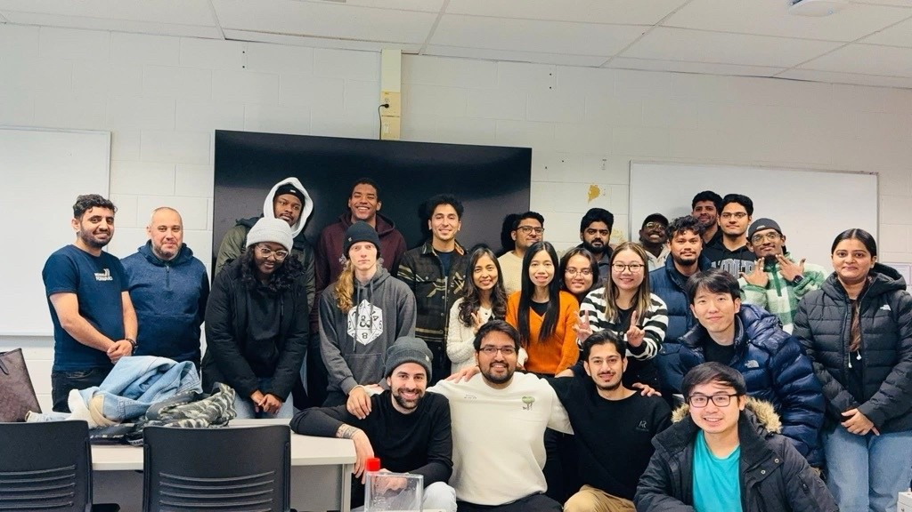
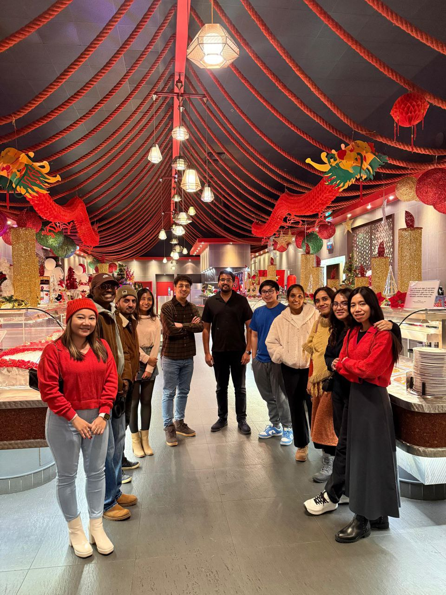
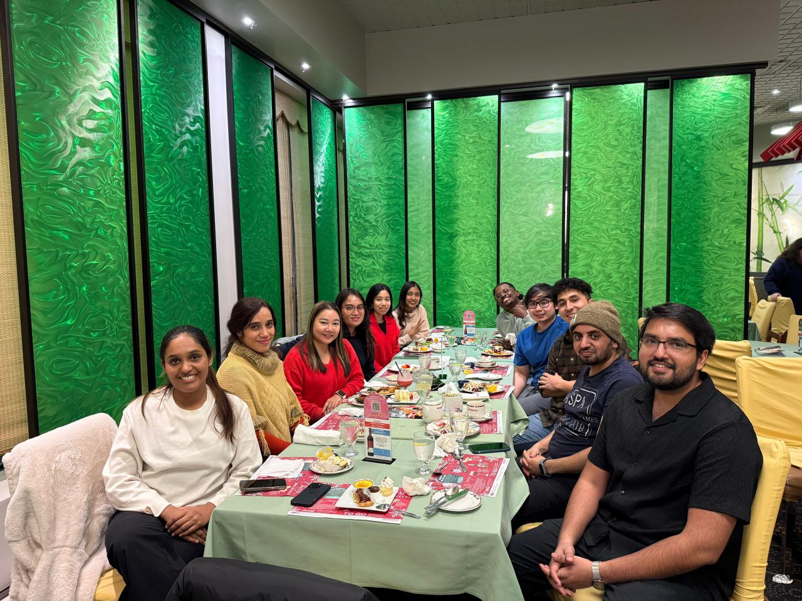
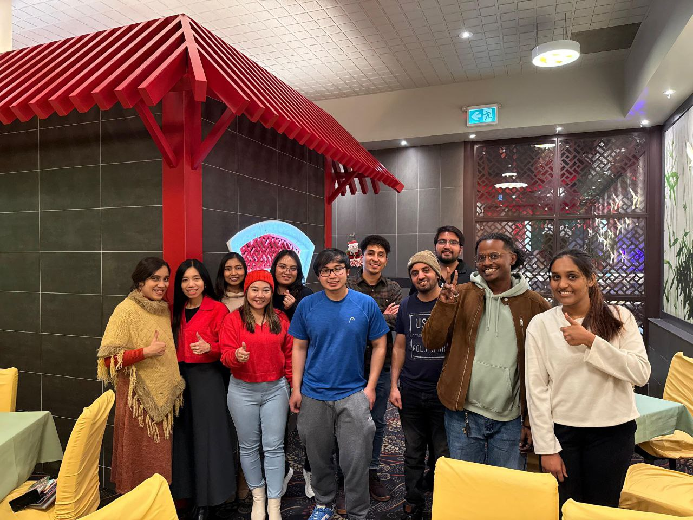
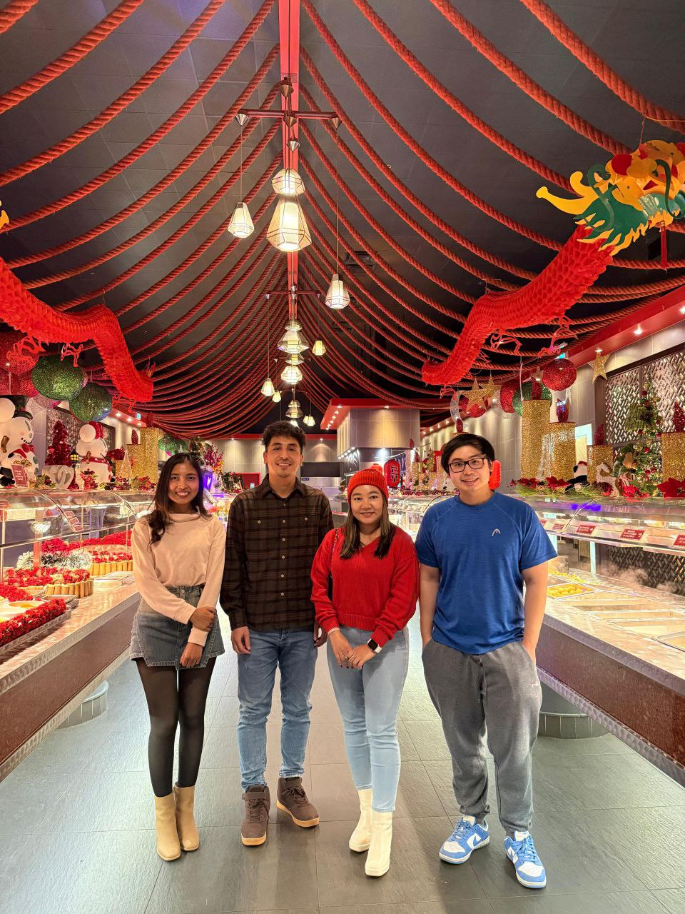
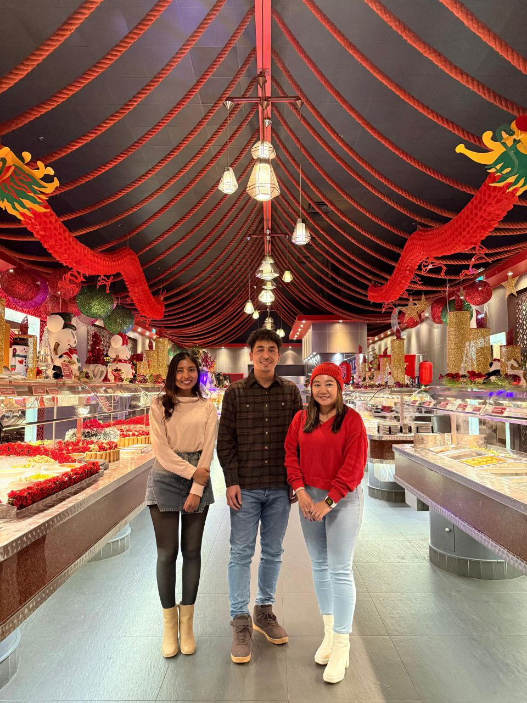
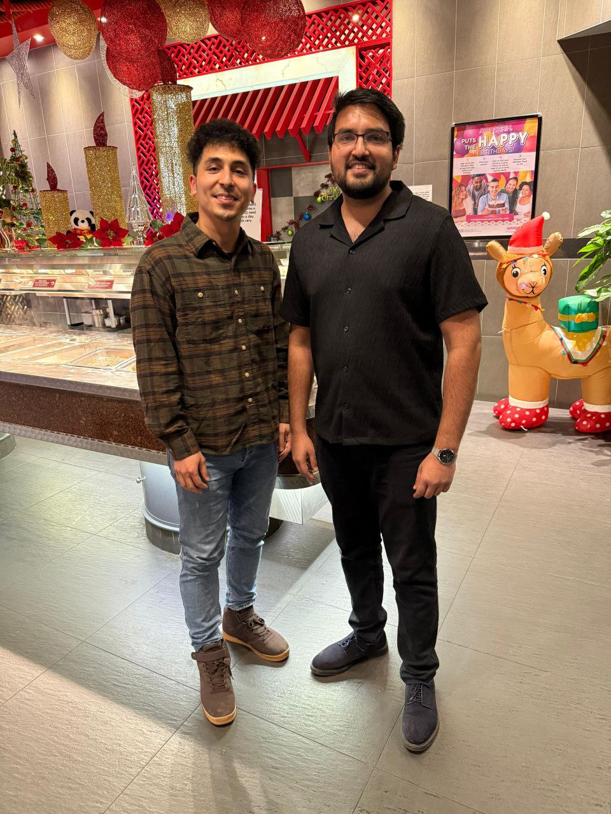
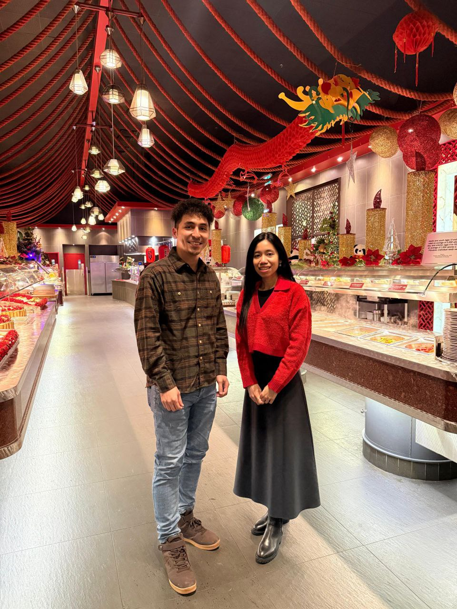

Fanshawe College · School of Information Technology · 4 AI/ML courses across 7 semesters, 44 authentic student voices, and full response distributions.
4.90
Fall 2025 Score
out of 5.00
+33%
Score Growth
Sum'24 → Fall'25
4
AI/ML Courses
15 course deliveries
70.4%
Response Rate
69 of 98 students
44
Student Comments
Across 3 courses
4.96
Effectiveness
Fall 2025 · /5.00
Teaching History
Courses & Semester Record
4 AI/ML courses across 15 deliveries at Fanshawe College · School of Information Technology
Code
Course Name
Deliveries
Semesters
INFO-6152
Deep Learning with TensorFlow & Keras 2
4
26W25F25S25W
INFO-6154
Machine Learning Optimization Strategies
5
25F25S25W24F24S
INFO-6146
TensorFlow & Keras with Python
3
25F25S25W
INFO-6145
Data Science and Machine Learning
3
25W24F24W
W = Winter · S = Summer · F = Fall
5-Semester Trend
Consistent Upward Trajectory
From 3.69 to 4.90 — five semesters of documented, unbroken improvement across all 20 competencies.
From 3.69 → 4.90 · A remarkable teaching journey
Over 5 consecutive semesters, satisfaction improved by +1.21 points (+32.8%). INFO-6154 achieved 6 perfect 5.00/5.00 scores in Fall 2025.
+1.21 pts growth
Overall Score Trend
Composite & effectiveness scores across all 5 semesters
4.90
Composite Score · All 20 Competencies
4.56
School of IT
+0.34 above
4.63
College
+0.27 above
4.96
Overall Effectiveness Rating
4.26
School of IT
+0.70 above
4.41
College
+0.55 above
5Semesters
+1.21pts growth
20Competencies
Deep Dive Analytics
Explore the Data in Detail
Six interactive views — radar, benchmarks, course breakdown, distributions, rankings, and full data table.
You vs School vs College — Score Trend
5-semester trajectory: your growth compared to School of IT and College averages
Competency Profile — Fall 2025 vs Summer 2024
Six teaching dimensions: full transformation visualized
INFO-6146 · TensorFlow & Keras with Python · 3 semesters (25F, 25S, 25W) INFO-6152 · Deep Learning with TF & Keras 2 · 4 semesters (26W, 25F, 25S, 25W) INFO-6154 · Machine Learning Optimization Strategies · 5 semesters (25F, 25S, 25W, 24F, 24S) INFO-6145 · Data Science and Machine Learning · 3 semesters (25W, 24F, 24W)
Response Frequency Distribution
Percentage of students choosing each response level
Always (5)
Most of the Time (4)
Half of the Time (3)
Rarely / Never
Top & bottom scoring dimensions per course — even the lowest scores remain excellent.
Top 3
1
Well prepared for each class
5.00
2
Respectful of everyone
5.00
3
Respects diverse ways of learning
5.00
Bottom 3 (still very high)
1
Available outside classroom
4.63
2
Sets clear evaluation expectations
4.70
3
Results of tests/assignments promptly
4.75
Top 3
1
Maintains control of the class
4.96
2
Provides fair evaluations
4.96
3
Displays enthusiasm for teaching
4.96
Bottom 3 (still very high)
1
Uses FanshaweOnline effectively
4.68
2
Results of tests/assignments promptly
4.76
3
Provides helpful comments & feedback
4.76
Top 3 6 perfect 5.00s!
1
Starts classes on time
5.00
2
Well prepared for each class
5.00
3
Engages me in learning
5.00
Bottom 3 (still very high)
1
Communicates clearly & effectively
4.75
2
Results of tests/assignments promptly
4.79
3
Uses FanshaweOnline effectively
4.79
All 20 Competencies — Fall 2025
Green ≥ 4.95 · Blue ≥ 4.90 · Teal ≥ 4.85 · Gold otherwise
Top 8 Highest-Rated Competencies
Complete 5-Semester History
#
Competency
Sum'24
Fall'24
Win'25
Sum'25
Fall'25
Trend
Voices & Moments
Students & Classroom Stories
Classroom moments from INFO-6152 & INFO-6154 — use the filter below to explore by course.
Filter photos by course
Classroom Moments

Add image: images/001-classroom.png

Add image: images/002-classroom.jpg

Add image: images/003-classroom.jpg

Add image: images/004-classroom.jpg

Add image: images/005-classroom.jpg

Add image: images/006-classroom.jpg

Add image: images/007-classroom.jpg

Add image: images/008-classroom.jpg
1 / 8
No photos for this course yet.
What Students Say
44 comments
Use arrow keys ← → or swipe to browse · auto-advances every 8 seconds · pauses on hover